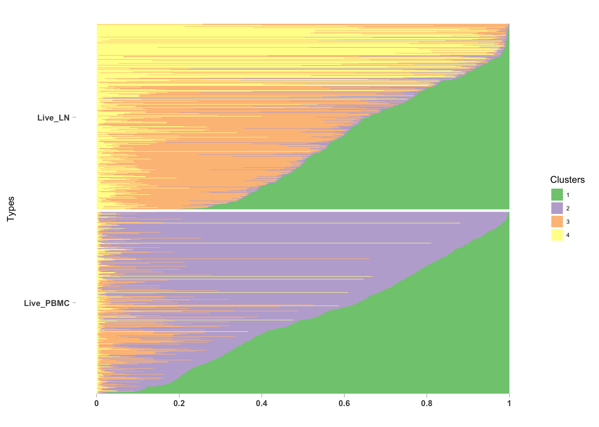
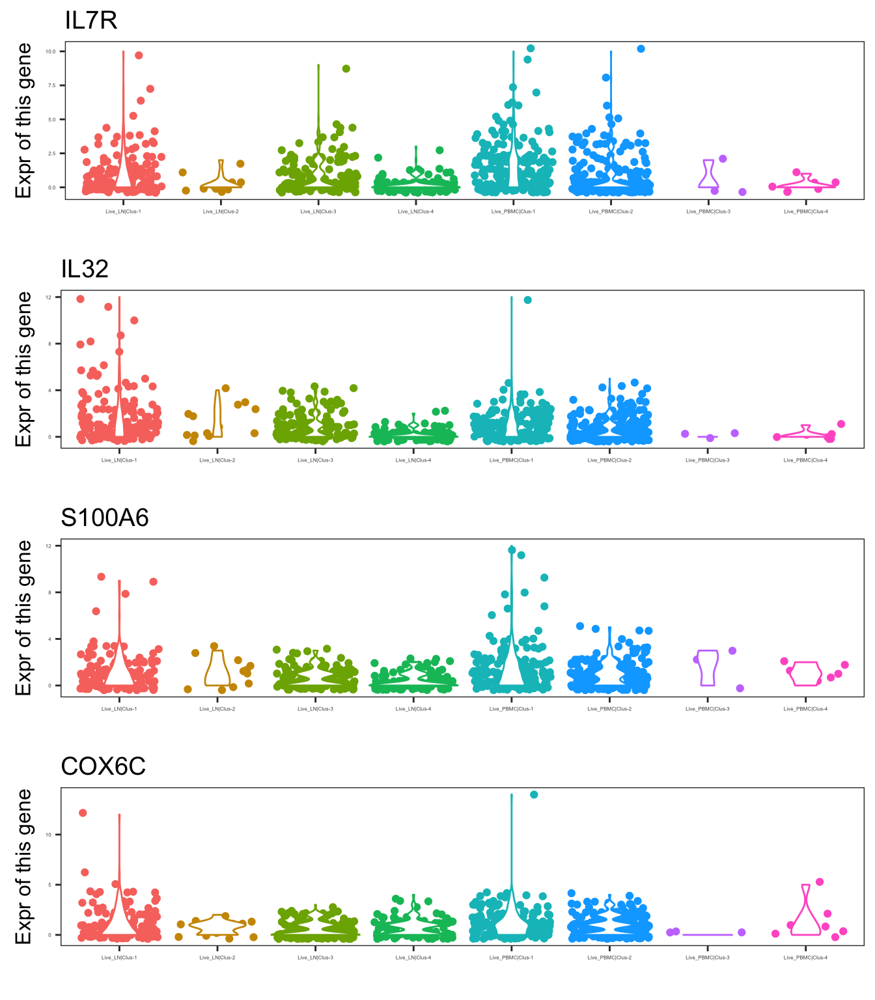
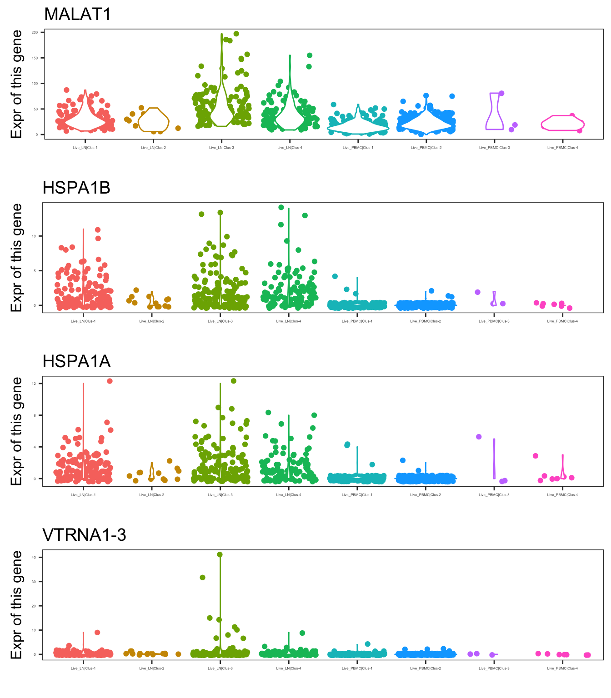

CountClust application on immune scRNAseq data : A demo
Kushal K Dey
7/20/2017
Introduction
This is a demo of the results from applying the Grade of Membership model CountClust on Pantaleo single cell RNA-seq data. The data was collected from three HIV- and one HIV+ patient from live cells and TFH cells with two sources of occurrence - Lymph node (LN) and PBMC (peripheral blood mononuclear cell).
In this script, I show the results of applying CountClust on LN+PBMC data for the Live cells for a HIV- patient (TFH146). The detailed results from application of CountClust to TFH cells or pooled TFH and Live cells for other patients are reported in a more detailed report in other scripts.
We look at the TFH146 patient here.
Countclust results
## [1] TRUE## [1] TRUE## [1] 826 16230## [1] 16230We fit CountClust model for \(K=4\).
topic_clus_list <- get(load("../data/TFH146/CountClust_Models_filtered.rda"))
PlotCountClust(topic_clus_list[[4]], LiveCells_fac)
Each horizontal line in the above plot is a single cell drawn from the TFH146 individual. The cells are grouped into LN and PBMC groups. Note that the first cluster (green) has representation in both the cells from PBMC and the LN cells. On the other hand, the 2nd cluster has high memberships in the PBMC cells and the 3rd cluster has high memberships in some of the the LN cells. The 4th cluster also seems to have high memberships in some of the cells from LN.
The question is can we say anything from these memberships patterns about the cell types of some of these cells. For example, are the cells with high memberships in the yellow cluster (cluster 4) belong to a particular cell type, and the ones with high high memberships in orange cluster belong to another cell type, both of which are present in Lymph nodes?
To answer the question, we use the ExtractTopFeatures() function in Countclust to determine the genes that drive these clusters and see if we find any common functionality among the top genes driving each cluster?
Top cluster driving genes
indices <- ExtractTopFeatures(topic_clus_list[[4]]$theta, top_features = 100, method = "poisson", options = "max")
imp_genes <- apply(indices, 1, function(x) return(colnames(counts2)[x]))top genes - Cluster 1, K = 4
out <- mygene::queryMany(imp_genes[1:50,1], scopes="symbol", fields=c("name", "summary"), species="human");## Finished
## Pass returnall=TRUE to return lists of duplicate or missing query terms.cbind.data.frame(out$name)[,1]## [1] interleukin 7 receptor
## [2] interleukin 32
## [3] S100 calcium binding protein A6
## [4] cytochrome c oxidase subunit 6C
## [5] GTPase, IMAP family member 7
## [6] CD2 molecule
## [7] NDUFA4, mitochondrial complex associated
## [8] Y-box binding protein 1
## [9] signal sequence receptor subunit 4
## [10] C-C motif chemokine receptor 7
## [11] selectin L
## [12] proteasome activator subunit 1
## [13] RNA binding motif (RNP1, RRM) protein 3
## [14] galectin 1
## [15] cytochrome c oxidase subunit 6A1
## [16] annexin A1
## [17] basic transcription factor 3
## [18] thioredoxin
## [19] lactate dehydrogenase A
## [20] transmembrane protein 258
## [21] FAU, ubiquitin like and ribosomal protein S30 fusion
## [22] vimentin
## [23] G protein-coupled receptor 183
## [24] ATP synthase, H+ transporting, mitochondrial Fo complex subunit G
## [25] proteasome activator subunit 2
## [26] macrophage migration inhibitory factor (glycosylation-inhibiting factor)
## [27] triosephosphate isomerase 1
## [28] proteasome subunit alpha 4
## [29] neural precursor cell expressed, developmentally down-regulated 8
## [30] signal peptidase complex subunit 3
## [31] proteasome subunit alpha 6
## [32] chromosome 14 open reading frame 2
## [33] adenine phosphoribosyltransferase
## [34] SERPINE1 mRNA binding protein 1
## [35] phosphoglycerate kinase 1
## [36] CD96 molecule
## [37] S100 calcium binding protein A4
## [38] solute carrier family 25 member 5
## [39] nucleophosmin 1
## [40] proteasome maturation protein
## [41] ERH, mRNA splicing and mitosis factor
## [42] integrin subunit beta 1
## [43] thymosin beta 10
## [44] peptidylprolyl isomerase B
## [45] transgelin 2
## [46] <NA>
## [47] heat shock protein family A (Hsp70) member 5
## [48] chloride intracellular channel 1
## [49] chromosome 14 open reading frame 166
## [50] T-cell receptor associated transmembrane adaptor 1
## 49 Levels: adenine phosphoribosyltransferase ... Y-box binding protein 1We find markers like interleukin related genes showing up as top driving genes.
top genes - Cluster 2, K = 4
out <- mygene::queryMany(imp_genes[1:50,2], scopes="symbol", fields=c("name", "summary"), species="human");## Finished
## Pass returnall=TRUE to return lists of duplicate or missing query terms.cbind.data.frame(out$name)[,1]## [1] C-C motif chemokine ligand 5
## [2] granulysin
## [3] granzyme B
## [4] natural killer cell granule protein 7
## [5] C-X9-C motif containing 1
## [6] beta-2-microglobulin
## [7] beta-2-microglobulin
## [8] beta-2-microglobulin
## [9] cystatin F
## [10] killer cell lectin like receptor D1
## [11] perforin 1
## [12] inhibitor of DNA binding 2, HLH protein
## [13] granzyme H
## [14] C-type lectin domain family 2 member B
## [15] TYRO protein tyrosine kinase binding protein
## [16] <NA>
## [17] Fc fragment of IgG receptor IIIa
## [18] Ly1 antibody reactive
## [19] interferon induced transmembrane protein 1
## [20] fibroblast growth factor binding protein 2
## [21] synaptotagmin like 3
## [22] spectrin repeat containing nuclear envelope protein 1
## [23] pleckstrin
## [24] cathepsin W
## [25] granzyme A
## [26] killer cell lectin like receptor F1
## [27] HOP homeobox
## [28] T cell receptor delta constant
## [29] T-cell receptor delta constant
## [30] C-C motif chemokine ligand 4
## [31] schlafen family member 5
## [32] ADP ribosylation factor like GTPase 6 interacting protein 5
## [33] granzyme K
## [34] pyrin and HIN domain family member 1
## [35] sterile alpha motif domain containing 3
## [36] general transcription factor IIIA
## [37] chromosome 1 open reading frame 21
## [38] interferon regulatory factor 1
## [39] MYB proto-oncogene like 1
## [40] diazepam binding inhibitor, acyl-CoA binding protein
## [41] EF-hand domain family member D2
## [42] transmembrane protein 59
## [43] spondin 2
## [44] protein phosphatase 1 regulatory subunit 16B
## [45] interleukin 2 receptor subunit beta
## [46] zinc finger E-box binding homeobox 2
## [47] SLAM family member 7
## [48] killer cell lectin like receptor G1
## [49] serglycin
## [50] FYN proto-oncogene, Src family tyrosine kinase
## [51] integrin subunit alpha 4
## [52] transmembrane protein 50A
## [53] selectin P ligand
## 50 Levels: ADP ribosylation factor like GTPase 6 interacting protein 5 ...We find NK cell related genes among the top genes in this cluster.
top genes - Cluster 3, K = 4
out <- mygene::queryMany(imp_genes[1:50,3], scopes="symbol", fields=c("name", "summary"), species="human");## Finished
## Pass returnall=TRUE to return lists of duplicate or missing query terms.cbind.data.frame(out$name)[,1]## [1] Metastasis associated lung adenocarcinoma transcript 1
## [2] metastasis associated lung adenocarcinoma transcript 1 (non-protein coding)
## [3] heat shock protein family A (Hsp70) member 1B
## [4] heat shock protein family A (Hsp70) member 1A
## [5] vault RNA 1-3
## [6] TBC1 domain family member 1
## [7] DnaJ heat shock protein family (Hsp40) member B1
## [8] <NA>
## [9] small nucleolar RNA, C/D box 89
## [10] <NA>
## [11] Jun proto-oncogene, AP-1 transcription factor subunit
## [12] regulator of G protein signaling 10
## [13] titin
## [14] heat shock protein family A (Hsp70) member 6
## [15] cytotoxic T-lymphocyte associated protein 4
## [16] interleukin 6 signal transducer
## [17] <NA>
## [18] RNA component of mitochondrial RNA processing endoribonuclease
## [19] RNA component of mitochondrial RNA processing endoribonuclease
## [20] lymphoid enhancer binding factor 1
## [21] chromosome 1 open reading frame 228
## [22] MAF bZIP transcription factor
## [23] S100 calcium binding protein A9
## [24] RCAN family member 3
## [25] early growth response 1
## [26] CD82 molecule
## [27] <NA>
## [28] TNF receptor superfamily member 25
## [29] growth arrest specific 5 (non-protein coding)
## [30] T cell receptor beta variable 28
## [31] T-cell receptor beta variable 28
## [32] T-cell receptor beta variable 28
## [33] <NA>
## [34] GPRIN family member 3
## [35] JunB proto-oncogene, AP-1 transcription factor subunit
## [36] nucleobindin 2
## [37] inositol polyphosphate-4-phosphatase type II B
## [38] nuclear receptor subfamily 4 group A member 1
## [39] S100 calcium binding protein A8
## [40] DnaJ heat shock protein family (Hsp40) member B4
## [41] nuclear protein, coactivator of histone transcription
## [42] ankyrin repeat domain 36C
## [43] ankyrin repeat domain 36C
## [44] transmembrane protein 63A
## [45] TROVE domain family member 2
## [46] interleukin 6 receptor
## [47] zinc finger and BTB domain containing 25
## [48] lysophosphatidic acid receptor 6
## [49] TBC1 domain family member 4
## [50] poly(A) binding protein cytoplasmic 1
## [51] fibrosin
## [52] trinucleotide repeat containing 6C
## [53] activating transcription factor 7 interacting protein
## [54] syntaxin 17
## [55] enoyl-CoA hydratase domain containing 2
## 47 Levels: activating transcription factor 7 interacting protein ...top genes - Cluster 4, K = 4
out <- mygene::queryMany(imp_genes[1:50,4], scopes="symbol", fields=c("name", "summary"), species="human");## Finished
## Pass returnall=TRUE to return lists of duplicate or missing query terms.#cbind.data.frame(out$name)
cbind.data.frame(out$name)[,1]## [1] major histocompatibility complex, class II, DR alpha
## [2] membrane spanning 4-domains A1
## [3] vault RNA 1-1
## [4] lymphotoxin beta
## [5] immunoglobulin kappa constant
## [6] immunoglobulin kappa constant
## [7] <NA>
## [8] immunoglobulin heavy constant alpha 1
## [9] immunoglobulin heavy constant alpha 1
## [10] immunoglobulin heavy constant alpha 1
## [11] CD74 molecule
## [12] B-cell scaffold protein with ankyrin repeats 1
## [13] major histocompatibility complex, class II, DQ alpha 1
## [14] major histocompatibility complex, class II, DQ beta 1
## [15] CD79b molecule
## [16] major histocompatibility complex, class II, DR beta 5
## [17] regulator of G protein signaling 2
## [18] myocyte enhancer factor 2C
## [19] major histocompatibility complex, class II, DR beta 1
## [20] <NA>
## [21] ADAM metallopeptidase domain 28
## [22] major histocompatibility complex, class II, DP alpha 1
## [23] heat shock protein family B (small) member 1
## [24] CD79a molecule
## [25] Ral GEF with PH domain and SH3 binding motif 2
## [26] heat shock protein 90 alpha family class B member 1
## [27] CD22 molecule
## [28] major histocompatibility complex, class II, DP beta 1
## [29] immunoglobulin kappa variable 1-5
## [30] immunoglobulin kappa variable 1-5
## [31] immunoglobulin kappa variable 1-5
## [32] ubiquinol-cytochrome c reductase hinge protein
## [33] immediate early response 5
## [34] immunoglobulin heavy constant gamma 1 (G1m marker)
## [35] immunoglobulin heavy constant gamma 1 (G1m marker)
## [36] immunoglobulin heavy constant gamma 1 (G1m marker)
## [37] absent in melanoma 2
## [38] <NA>
## [39] G protein subunit gamma 7
## [40] signal transducing adaptor family member 1
## [41] IFI30, lysosomal thiol reductase
## [42] interferon regulatory factor 8
## [43] lysozyme
## [44] toll like receptor 10
## [45] major histocompatibility complex, class II, DM beta
## [46] immunoglobulin heavy constant mu
## [47] immunoglobulin heavy constant mu
## [48] immunoglobulin heavy constant mu
## [49] immunoglobulin lambda constant 2
## [50] immunoglobulin lambda constant 2
## [51] <NA>
## [52] small nucleolar RNA, C/D box 13
## [53] long intergenic non-protein coding RNA 926
## [54] membrane associated ring-CH-type finger 1
## [55] transmembrane protein 107
## [56] CD19 molecule
## [57] immunoglobulin lambda constant 3 (Kern-Oz+ marker)
## [58] immunoglobulin lambda constant 3 (Kern-Oz+ marker)
## [59] syntaxin 7
## [60] B-cell CLL/lymphoma 11A
## [61] BLK proto-oncogene, Src family tyrosine kinase
## 46 Levels: absent in melanoma 2 ... vault RNA 1-1We find lymph related and B cell marker genes among the top driving genes for this cluster.
Expression patterns of top driving genes
To validate that these genes are indeed driving the clusters, we plot the expression patterns of the genes for the different clusters corresponding to the LN and PBMC grouping.
First cluster genes (K=4)

Second cluster genes (K=4)

Third cluster genes (K=4)

Fourth cluster genes (K=4)
This R Markdown site was created with workflowr